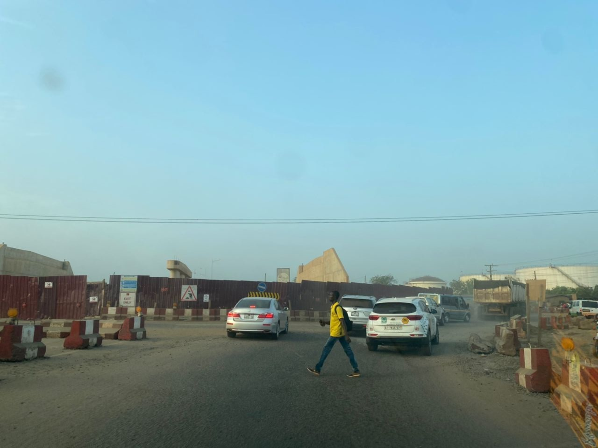
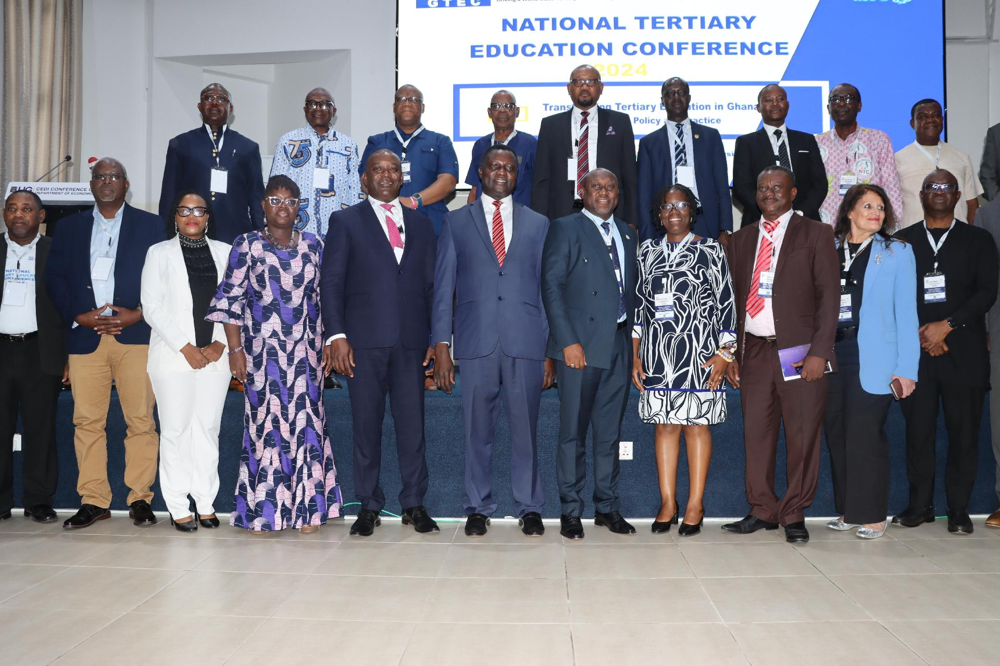

Welcome to Vidocomm News
Not by choice, but because of the crazy traffic situation they must endure even at their young ages on the Tema-Aflao route every day. This has been the situation for a long time, but some days are excruciatingly emotional for me as I watch them drag their bags to join their mates in their classrooms. The little tired faces tell that they would rather be in bed, than be in school at that hour.
Latest News
New Highways Open in Accra
Residents celebrate the opening of a new highway aimed at reducing traffic congestion...

Education Reforms Announced
The National Association of Graduate Teachers, NAGRAT, has taken a swipe at the government over its lack of substantial consultation in its attempt to reform the educational sector. Speaking on The Big Issue, NAGRAT’s President, Angel Carbonu, for example, said he had “not met one person from that reform secretariat.” “I don’t know the holistic agenda of the reforms” he said. Mr. Carbonu said the government’s consultations needed to be more mindful of the stakeholders in education. “I don’t know what reforms they are talking about. In education, you don’t do partial reforms… Where is the document that [we] can use as a standard of reference? How did you bring Ghanaians on board to come and understand the objectives and goals you are developing that reform?”. “When teachers are not in tandem with your policy, it can be a good policy, but it can fail. Society ought to be brought along,” he added. Mr. Carbonu further dismissed what the government has in the past described as consultation with stakeholders in education. “You have already finished with the document. You have invited me to the last programme to announce the document to me. When I raise red flags, you say you have consulted me. How can that be consultation?”he quizzed. “I have to be part of the whole process from the beginning and take my input… Let the inputs of people fashion out,” Mr. Carbonu insisted. The Ministry of Education has developed what it called a comprehensive Education Strategic Plan for 2018 to 2030. It sets out the vision and policies for moving the country into a “learning nation”. This 12-year document was developed alongside the Education Sector Analysis (ESA) 2018 and the Education Sector Medium-Term Development Plan (ESMTDP) 2018-2021. The government established the National Education Reform Secretariat to facilitate the implementation of key reforms.
Empowering Women in Rural Ghana
Across rural communities in Ghana, women are spearheading change through innovative farming...

The Rise of Tech Startups in Accra
With an influx of young innovators, Accra is rapidly becoming a hub for technology startups...